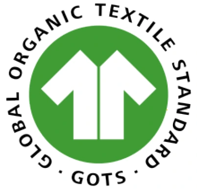

Certified
GOTS Global Organic Textile Standard
Hari Tex holds GOTS certification — the leading certification for organic textiles worldwide. GOTS requires independent, on-site auditing of the entire production chain, from raw organic fibre through to finished, labelled fabric, along with strict environmental and toxicological limits on the chemicals used in processing.
Our certification covers both dyed and greige woven organic cotton fabrics.